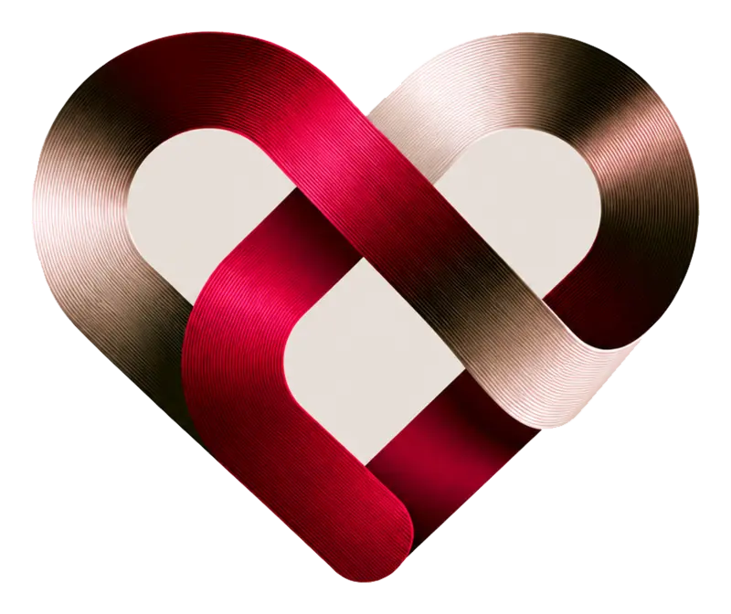
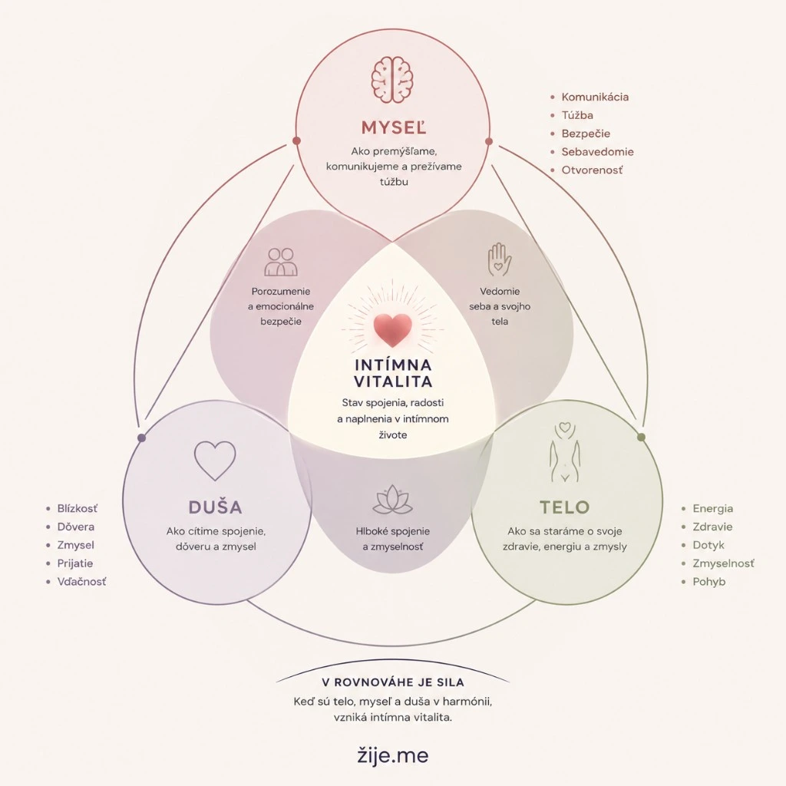
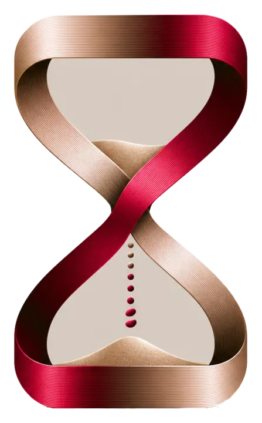

Pre seba
Tvoje telo. Tvoje tempo.
Objavuj svoje potreby bez hanby, porovnávania a tlaku na výkon.
Nájsť svoj začiatokDiskrétne doručenie · Starostlivý výber · Bez predsudkov

zije.meIntimacy & Wellness · Pre jednotlivcov aj páry
Kurátorovaný obchod, odborný obsah a vedomé rituály, ktoré ti pomôžu lepšie rozumieť svojmu telu, túžbam a blízkosti — sólo aj vo dvojici.
Tvoje telo. Tvoje tempo.
Odborne · Ľudsky · Bez predsudkov
Dve rovnocenné cesty
Sexuálne šťastie nie je podmienené vzťahom. A blízkosť vo vzťahu nevzniká automaticky.
Pre seba
Objavuj svoje potreby bez hanby, porovnávania a tlaku na výkon.
Nájsť svoj začiatokPre dvoch
Dotyk, komunikácia a spoločné objavovanie bez očakávania povinného výsledku.
Objavovať spoluTelo · Myseľ · Duša
Intimita prepája potešenie, sebaspoznanie a bezpečie do jedného celku.
Potešenie, sexuálne zdravie, dotyk, komfort a energia.
Sebaspoznanie, túžby, predstavivosť a otvorená komunikácia.
Prijatie, blízkosť, dôvera, rešpekt k hraniciam a bezpečie.
Sexualita je prirodzenou súčasťou kvalitného života — nie jeho oddelenou kategóriou.
Čítať o intimite →
Filozofia zije.me
Keď sa telo, myseľ a duša nestavajú proti sebe, vzniká priestor pre spojenie, radosť a naplnenie v intímnom živote. Tento stav nazývame Intímna vitalita.
Každodenné malé kroky
Zámer, príprava, bezpečné kroky a priestor vnímať, čo ti skutočne vyhovuje.
Ako tvoríme rituály →Sebaspoznanie
Tvoje tempo
Bez výkonu
Vnímanie
Komunikácia
Hranice
Blízkosť
Spoločný čas
Bez očakávaní
Relaxácia
Senzorický dotyk
Dôvera
Predstavy
Prijatie
Súhlas

Vitae Amoris · Súkromie na prvom mieste
Voliteľná súkromná vrstva ti môže diskrétne pripomenúť čas pre seba, partnerský check-in alebo vedomý dotyk.
Súkromný rytmus
Dnešný rituálVedomý dotyk
20:30VoliteľnéKrátky check-in
Odborný magazín zije.me
Naša filozofia
Neponúkame bezduché produkty.
Pomáhame tvoriť hlbšiu intimitu.
Pomáhame ľuďom lepšie rozumieť sebe, bezpečne objavovať svoju sexualitu a budovať kvalitnejší vzťah k sebe aj k druhým.
Spoznať našu filozofiu